ShinyApp for Beer Analysis can be found here
Introduction
The Purpose of this analysis is to explore and present to the leadership of Budwieser the following findings:
The number of breweries per state in the United States. If there is any type of linear relationship to IBU (International Bitterness Unit) and ABV (Alcohol by Volume). Explores if there is a difference with respect to IBU and ABV between IPAs (India Pale Ales) and other types of Ale using two different classification techniques. If there is a difference in the ABV in different regions of the United States. If there is a difference in the IBU for the 12 OZ. and 16 OZ. serving sizes.
This document will address the previously stated questions as well as provide the research methodolgy and address assumptions about the data.
Loading Data into R environment as well as loading the following libraries: ggplot2, car, dplyr, stringr, maps, ggpubr Coercing the ‘state’ column in the US states spatial data to a character to be used downstream
library(ggplot2)
library(car)## Loading required package: carDatalibrary(dplyr)##
## Attaching package: 'dplyr'## The following object is masked from 'package:car':
##
## recode## The following objects are masked from 'package:stats':
##
## filter, lag## The following objects are masked from 'package:base':
##
## intersect, setdiff, setequal, unionlibrary(stringr)
library(maps)
library(ggpubr)## Loading required package: magrittrdfBeers = read.csv("C:/Users/BGaither/Documents/GitHub/DS_6306/RawDataFiles/Beers.csv",header = TRUE)
dfBreweries = read.csv("C:/Users/BGaither/Documents/GitHub/DS_6306/RawDataFiles/Breweries.csv",header = TRUE)
us_states = read.csv('C:/Users/BGaither/Documents/GitHub/DS_6306/RawDataFiles/states.csv', header = TRUE)
#dfBeers = read.csv(file.choose(),header = TRUE)
#dfBreweries = read.csv(file.choose(),header = TRUE)
#us_states = read.csv(file.choose(), header = TRUE)
us_states['state'] = as.character(us_states$state)
#head(dfBeers)
#head(dfBreweries)Question of interest: How many breweries are present in each state?
Answer: The states with the largest amounts of breweries are Colorado, California and Michigan. The states with the fewest amounts of breweries are North Dakota, South Dakota and West Virginia. The states with the largest amounts of breweries tend to be states with moderate to high populations that have strong craft brew scenes. The states with the fewest amounts of breweries tend to be lower population, rural states.
#
data.frame(table(dfBreweries$State)) %>% ggplot(aes(x = State, y = Freq), mapping=aes(x = reorder(Var1, -Freq), y = Freq)) + geom_bar(stat = "Identity", fill="blue") + xlab("State") + ylab("Count") + ggtitle("Number of Breweries by State")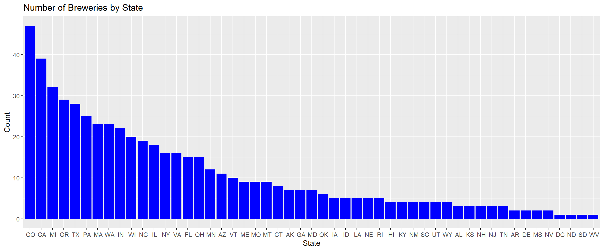
#Let’s use the data above to determine how the states make up the total cumulative percent of all breweries using a Pareto Analysis
myDF = dfBreweries %>% count(dfBreweries$State)
#descending sort
myDF <- myDF[order(myDF$n, decreasing = TRUE),]
#adding a cumulative sum
myDF$cumulative <- cumsum(myDF$n)
colnames(myDF) <- c("State", "Count", "Cumulative")
library(ggQC)
ggplot(myDF, aes(x=reorder(State, -Count), y=Count)) + geom_bar(stat="identity") + theme(axis.text.x=element_text(angle=90,hjust=1)) + stat_pareto(point.color="red", point.size=2, line.color="black", bars.fill = c("blue", "orange"))+ labs(title = "Pareto of Breweries by State", x='States', y='Count')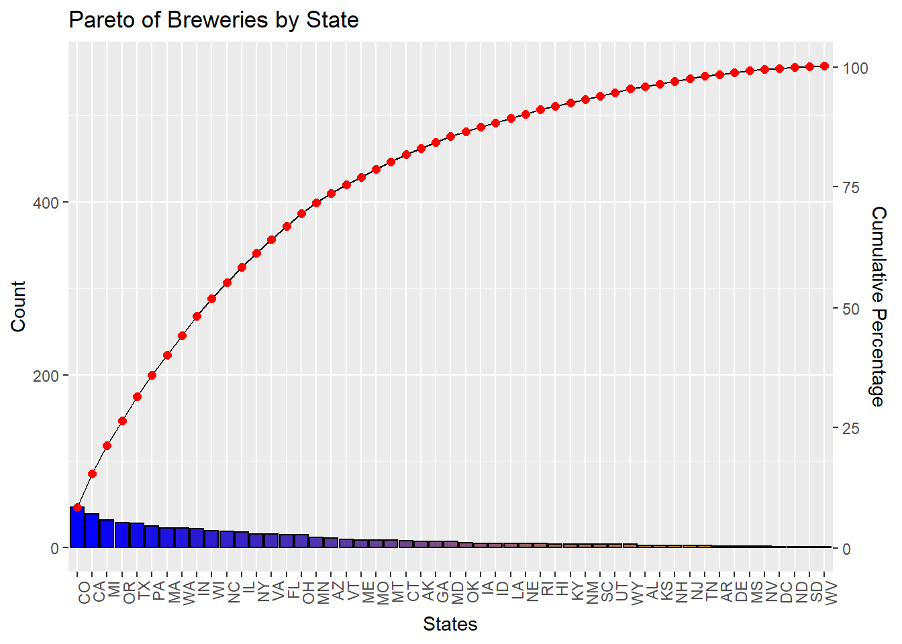
Merge the individual data frames such that the data set to be used in the analysis
dfFull = left_join(dfBeers, dfBreweries, by= c("Brewery_id"="Brew_ID"))
dfFull['State'] = as.character(str_trim(dfFull$State))
dfFull = left_join(dfFull, us_states, by = c("State" = "state"))
#head(dfFull)
#tail(dfFull)
#dfFull %>% filter(!is.na(IBU))
#to evaluate IPAs against Ales
dfFull["Ales"] = ifelse(grepl("IPA", dfFull$Style),"IPA", ifelse(grepl("Ale", dfFull$Style),"Ale","Other"))
dfFull$Ales = as.factor(dfFull$Ales)Formatting the dataframe
#rename the columns for beer and brewery name
dfFull = dfFull %>% rename(Beer_Name = Name.x, Brewery_Name = Name.y)
#checking to see which columns have NA's
colnames(dfFull)[colSums(is.na(dfFull))>0]## [1] "ABV" "IBU"Question of Interest: How many missing values are in the dataset for ABV and IBU? There are 62 Missing values for ABV and 1005 Missing values for IBU
print(dim(dfFull[is.na(dfFull$ABV),])[1]) ## [1] 62print(dim(dfFull[is.na(dfFull$IBU),])[1])## [1] 1005Question of Interest: Which state has the maximum alcoholic (ABV) beer? Which state has the most bitter (IBU) beer after computing the median IBU and ABV?
Answer: Looking at Median Alcohol by Volume by State and Median IBU’s by State, the median ABV is highest in DC, Kentucky and Maine, while ABV tends to be lowest in Wyoming, New Jersey and Utah. Utah has a maximum ABV for beer, so its lower median ABV makes sense. The highest median IBU is in Maine, West Virginia and Florida. The lowest median IBU is in Arizona, Kansas and Wisconsin.
dfIBU = dfFull %>% filter(!is.na(IBU))
dfABV = dfFull %>% filter(!is.na(ABV))
ggplot(data=aggregate(dfABV$ABV, by=list(dfABV$State), FUN=median), mapping=aes(x = reorder(Group.1,-x), y = x)) + geom_bar(stat = "identity", fill="blue") + xlab("State") + ylab("ABV") + ggtitle("Median Alcohol By Volume (ABV) by State")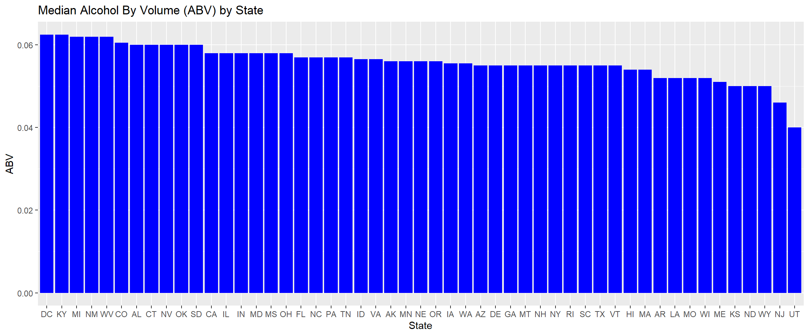
ggplot(data=aggregate(dfIBU$IBU, by=list(dfIBU$State), FUN=median), mapping=aes(x = reorder(Group.1,-x), y = x)) + geom_bar(stat = "identity", fill="blue") + xlab("State") + ylab("IBU") + ggtitle("Median International Bitterness Unit (IBU) by State")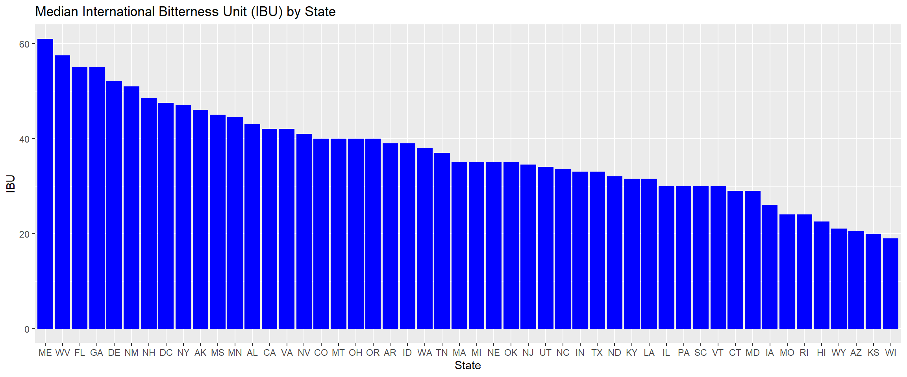
Generating map to look at Max Alcohol by Volume by State and Max IBU’s by State
ggplot(data=aggregate(dfABV$ABV, by=list(dfABV$State), FUN=max), mapping=aes(x = reorder(Group.1,-x), y = x)) + geom_bar(stat = "identity", fill="blue") + xlab("State") + ylab("ABV") + ggtitle("Maximum Alcohol By Volume (ABV) by State")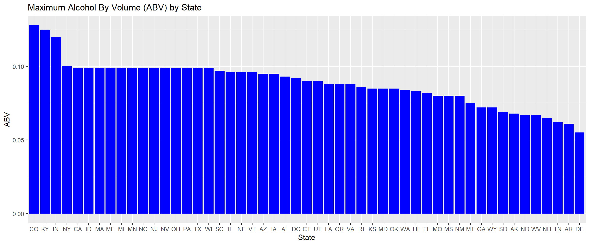
ggplot(data=aggregate(dfIBU$IBU, by=list(dfIBU$State), FUN=max), mapping=aes(x = reorder(Group.1,-x), y = x)) + geom_bar(stat = "identity", fill="blue") + xlab("State") + ylab("IBU") + ggtitle("Maximum International Bitterness Unit (IBU) by State")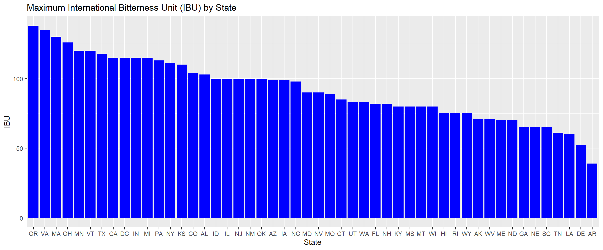
#Mapps of Max IBU by State
usa = map_data("usa")
p <- ggplot() +
geom_polygon(data = usa, aes(x = long, y = lat, group = group), fill = "lightblue", color = "black") +
coord_quickmap()
#takes aggregates and labels coordinates
agg = aggregate(dfIBU$IBU, by=list(dfIBU$State), FUN=max)
state_agg = inner_join(agg, us_states, by = c("Group.1" = "state"))
state_agg = state_agg[order(state_agg$x, decreasing = TRUE)[1:10],]
#layers on plots with each state and aggregate
p + geom_point(data = state_agg, aes(x = longitude, y = latitude)) + geom_text(data = state_agg, aes(x = longitude, y = latitude, label = x), hjust = 0 , nudge_x = 0.75, color = "red" )+
geom_text(data = state_agg, aes(x = longitude, y = latitude, label = name), hjust = 1 , nudge_x = 3, nudge_y = -1, color = "red" )+
coord_fixed(1.50) + # fix lat/long display ratio
ggtitle("Top 10 States with Greatest IBU") + theme_bw() + theme(plot.title = element_text(hjust = 0.5)) + theme(panel.border = element_blank(), panel.grid.major = element_blank(), panel.grid.minor = element_blank(), axis.line = element_line(colour = "Black")) +
theme(legend.position = "none",
axis.title.x=element_blank(), # hide x axis title
axis.text.x=element_blank(), # hide x axis text
axis.ticks.x=element_blank(), # hide x axis ticks
axis.title.y=element_blank(), # hide y axis title
axis.text.y=element_blank(), # hide y axis text
axis.ticks.y=element_blank()) # hide y axis ticks## Coordinate system already present. Adding new coordinate system, which will replace the existing one.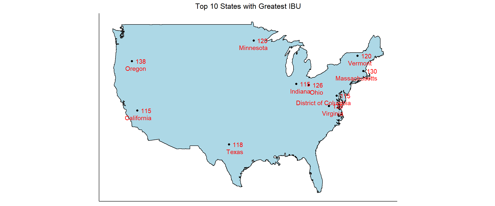
agg = aggregate(dfABV$ABV, by=list(dfABV$State), FUN=max)
state_agg = inner_join(agg, us_states, by = c("Group.1" = "state"))
state_agg = state_agg[order(state_agg$x, decreasing = TRUE)[1:10],]
p + geom_point(data = state_agg, aes(x = longitude, y = latitude)) + geom_text(data = state_agg, aes(x = longitude, y = latitude, label = round((x*100)), digits = 3), hjust = 0 , nudge_x = 1, color = "red" )+
geom_text(data = state_agg, aes(x = longitude, y = latitude, label = name), hjust = 1 , nudge_x = 2, nudge_y = -1, color = "red" )+
coord_fixed(1.50) + # fix lat/long display ratio
ggtitle("Top 10 States With Greatest ABV") + theme_bw() + theme(plot.title = element_text(hjust = 0.5)) + theme(panel.border = element_blank(), panel.grid.major = element_blank(), panel.grid.minor = element_blank(), axis.line = element_line(colour = "Black")) +
theme(legend.position = "none",
axis.title.x=element_blank(), # hide x axis title
axis.text.x=element_blank(), # hide x axis text
axis.ticks.x=element_blank(), # hide x axis ticks
axis.title.y=element_blank(), # hide y axis title
axis.text.y=element_blank(), # hide y axis text
axis.ticks.y=element_blank()) # hide y axis ticks## Warning: Ignoring unknown aesthetics: digits## Coordinate system already present. Adding new coordinate system, which will replace the existing one.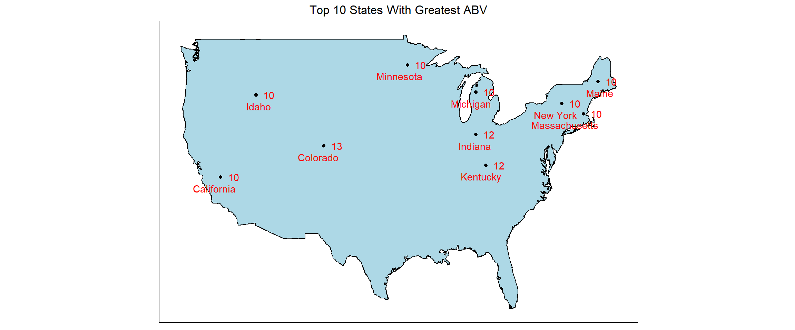 Question of Interest: Comment on the Summary Statistics of ABV and its Distribution
ABV Distribution + Summary Statistics
summary(dfABV$ABV)## Min. 1st Qu. Median Mean 3rd Qu. Max.
## 0.00100 0.05000 0.05600 0.05977 0.06700 0.12800Answer: We would like to get a better understanding of the distribution of ABV to get a sense of what ABV most beers contain. The majority of beers contain ~.05 ABV
ggplot(dfABV, aes(x=dfABV$ABV)) + geom_histogram(colour="black", fill="blue") + xlab("ABV") + ylab("Frequency") + ggtitle("Distribution of ABV")## `stat_bin()` using `bins = 30`. Pick better value with `binwidth`.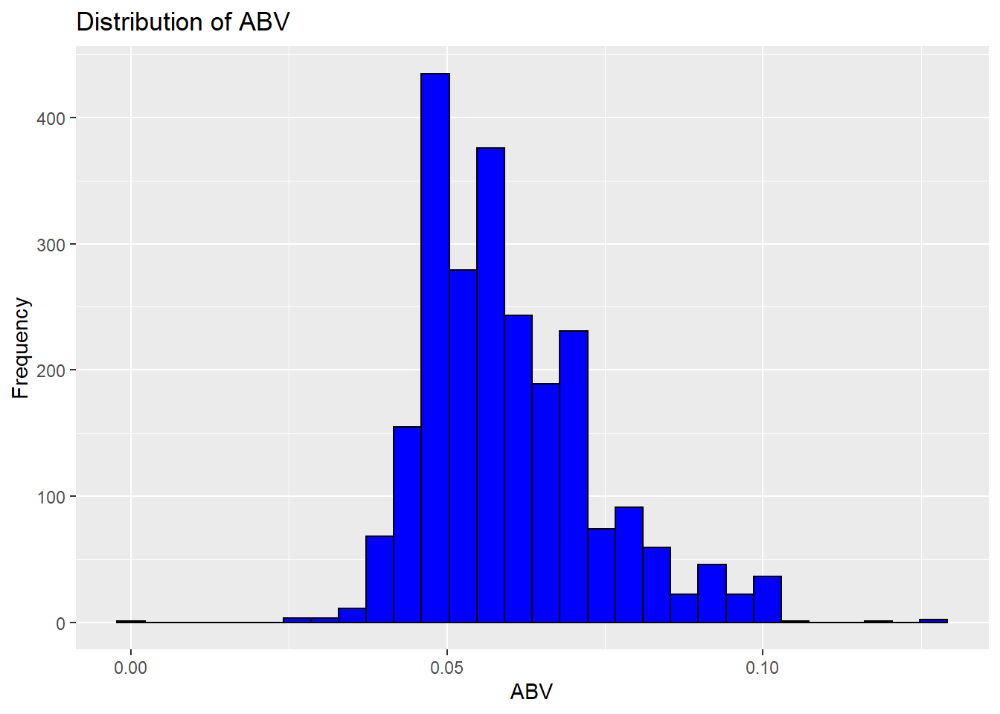
ggplot(dfABV, aes(x=dfABV$Ales, y=dfABV$ABV)) + geom_boxplot(outlier.color="black", outlier.shape=16, outlier.size=2, notch=FALSE)+ ggtitle("Boxplot of Ales vs ABV")+ xlab("Ales") + ylab("ABV")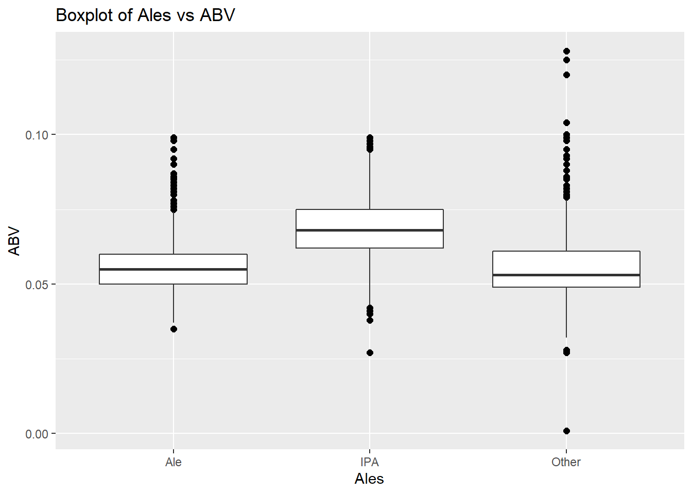
Question of Interest: is there an apparent relationship between the bitterness of the beer and its alcoholic content? Draw a scatter plot. Make your best judgment of a relationship?
Answer: We would like to investigate whether there is a relationship between ABV and IBU. To start out, we have created a scatterplot of ABV to IBU to look for visual indication of a relationship. We also checked by logging the variables to see if the relationship observed increased. There does appear to be a slight positive linear relationship, but we’ll continue our analysis by checking the correlation of these variables next.
dfRM = na.omit(dfFull)
dfRM["Log_IBU"] = log(dfRM$IBU)
dfRM["Log_ABV"] = log(dfRM$ABV)
dfRM["Logit_ABV"] = logit(dfRM$ABV)
ggplot(data = dfRM, mapping = aes(x = dfRM$ABV, y = dfRM$IBU )) + geom_point() + xlab("ABV") + ylab("IBU") + ggtitle("Relatinship of ABV to IBU, ABV vs. IBU")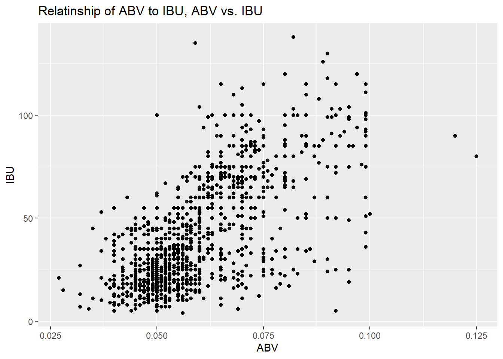
ggplot(data = dfRM, mapping = aes(x = dfRM$Log_ABV, y = dfRM$Log_IBU )) + geom_point() + xlab("Log_ABV") + ylab("Log_IBU") + ggtitle("Relatinship of ABV to IBU, Log ABV vs. Log IBU") + geom_smooth()## `geom_smooth()` using method = 'gam' and formula 'y ~ s(x, bs = "cs")'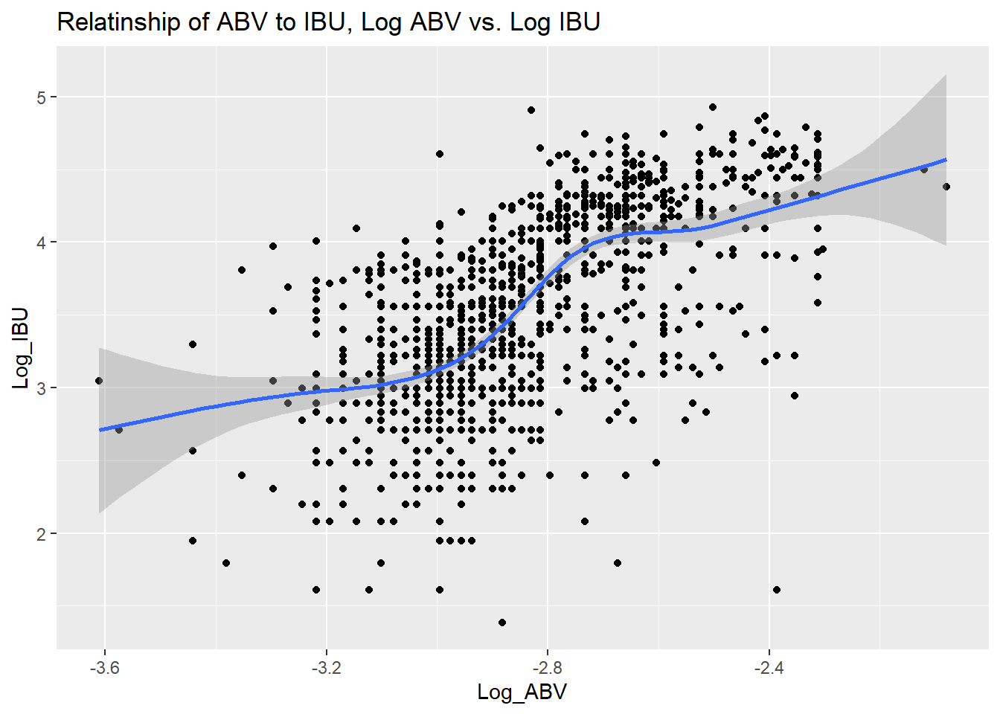
ggplot(data = dfRM, mapping = aes(x = dfRM$Logit_ABV, y = dfRM$IBU )) + geom_point() + xlab("Logit_ABV") + ylab("IBU") + ggtitle("Relationship of ABV to IBU, Logit ABV vs. IBU") + geom_smooth()## `geom_smooth()` using method = 'gam' and formula 'y ~ s(x, bs = "cs")'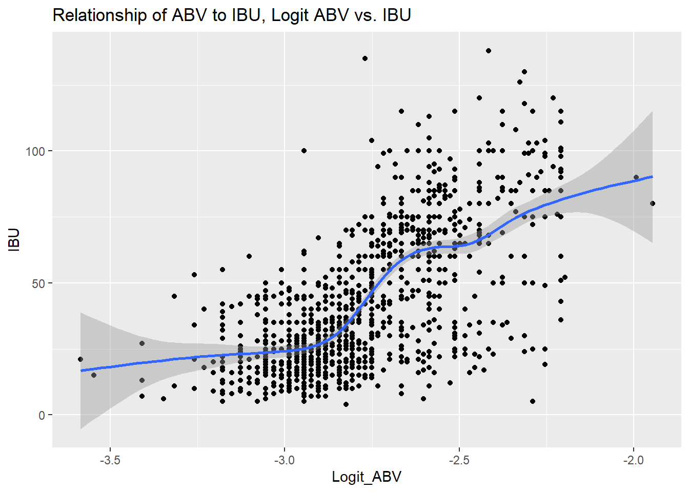
ggplot(data = dfRM, mapping = aes(x = dfRM$Logit_ABV, y = dfRM$Log_IBU, color = Ales)) + geom_point() + xlab("Logit_ABV") + ylab("Log_IBU") + ggtitle("Relationship of ABV to IBU, Logit ABV vs. Log IBU")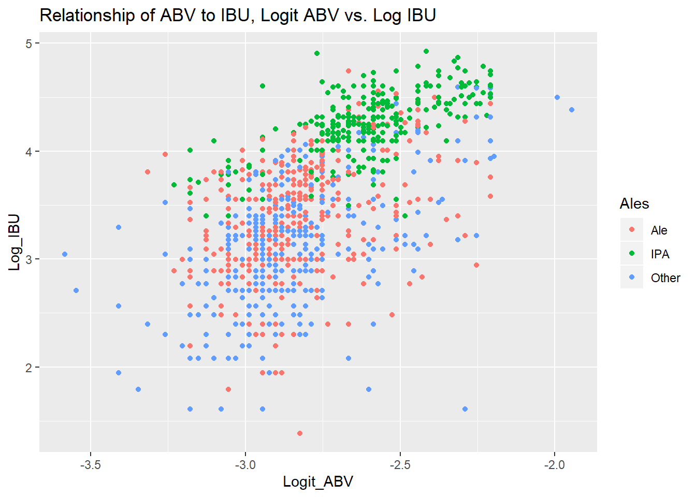
ggplot(data = dfRM, mapping = aes(x = dfRM$Logit_ABV, y = dfRM$Log_IBU)) + geom_point() + xlab("Logit_ABV") + ylab("Log_IBU") + ggtitle("Relationship of ABV to IBU, Logit ABV vs. Log IBU") + geom_smooth()## `geom_smooth()` using method = 'gam' and formula 'y ~ s(x, bs = "cs")'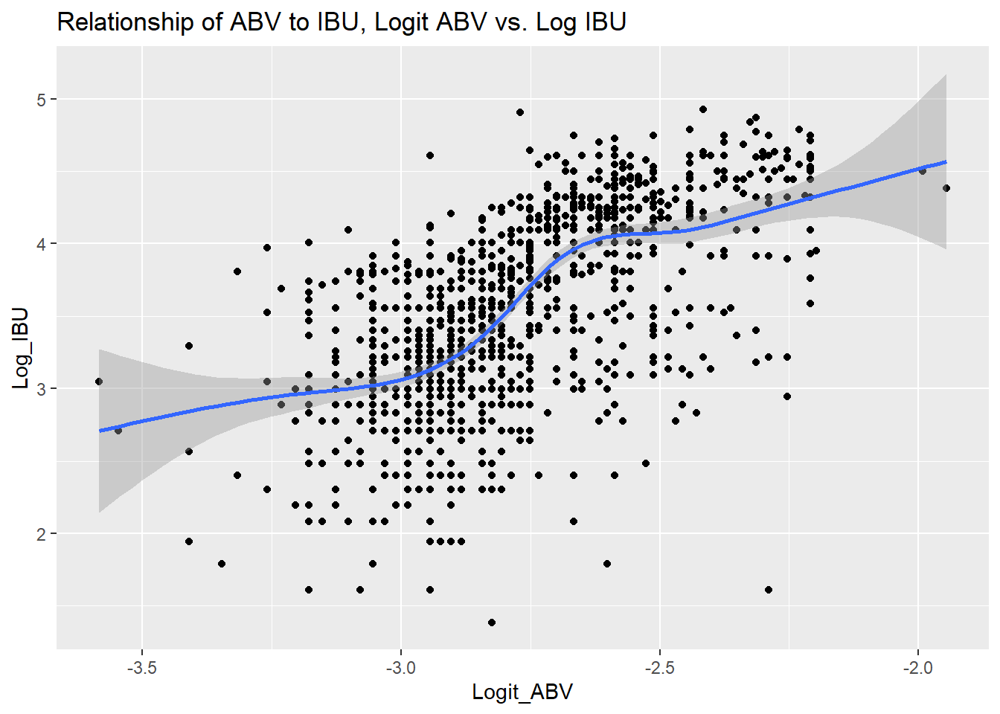
Question of Interest: Is there an apparent relationship between the bitterness of the beer and its alcoholic content?
Answer:
We would like to investigate if there is a relationship between the bitterness of the beer and it’s alcoholic content while at the same time trying to identify a relationship between Ales, IPA’s and other styles of beer. Looking at the relationship of ABV and IBU to Ales, IPA and other style of beer we can see there is a positive correlation between ABV and IBU and we can also see evidence of clusters around the styles of beer. To do this in a more formal manner, we perform a pearson correlation between the two variables. The result is a positive correlation with a pearsons correlation value of 0.671.
library(GGally)## Registered S3 method overwritten by 'GGally':
## method from
## +.gg ggplot2##
## Attaching package: 'GGally'## The following object is masked from 'package:dplyr':
##
## nasadfRM %>%
select(ABV, IBU) %>%
ggpairs(title = "ABV vs. IBU")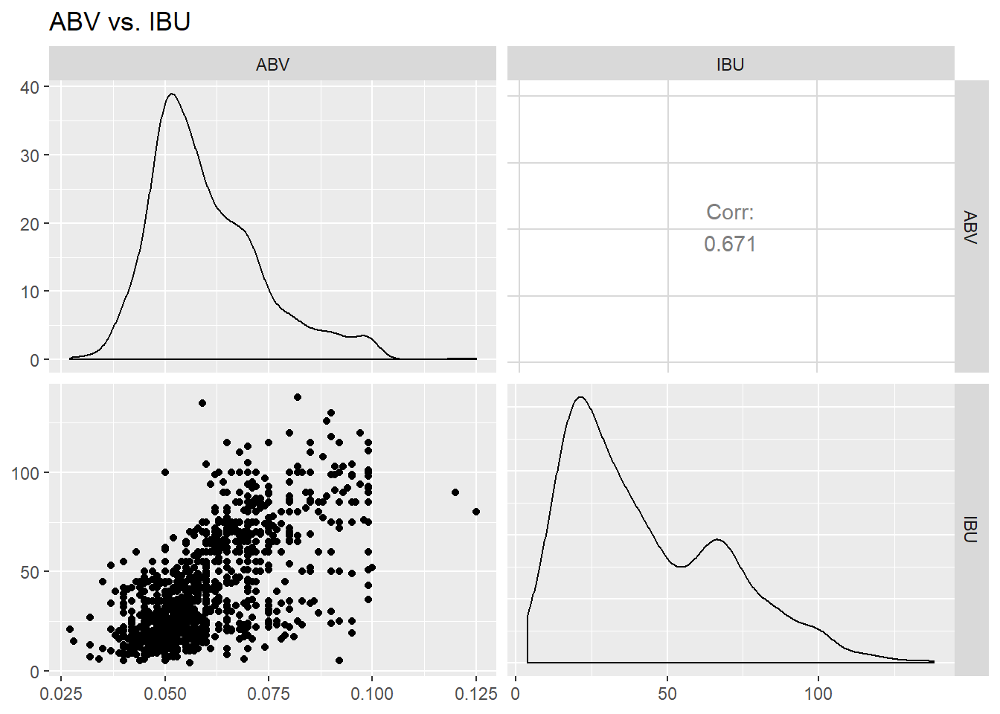
dfRM %>% select(Logit_ABV, Log_IBU) %>% ggpairs(title = "Logit_ABV vs. Log_IBU")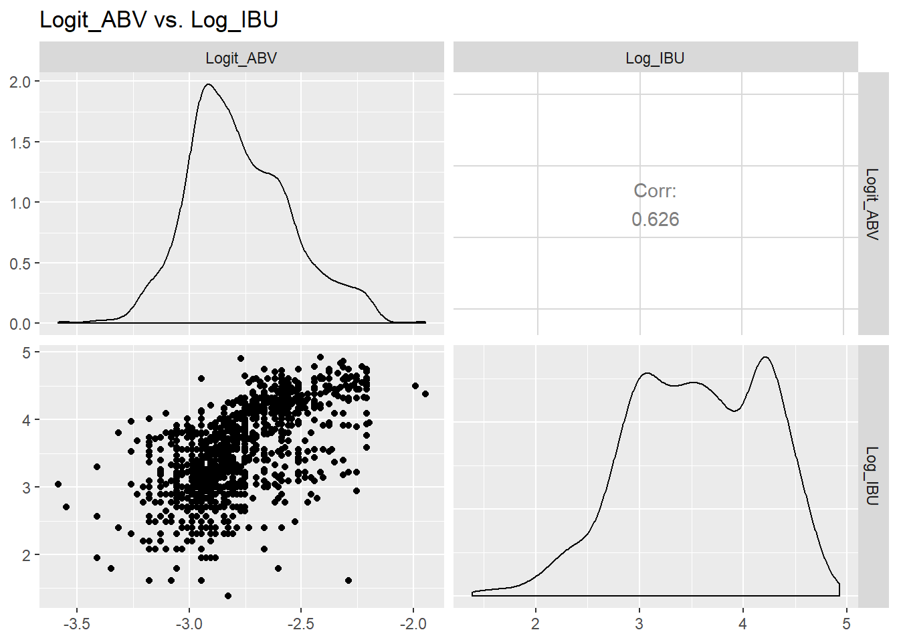
dfRM %>%
select(ABV, IBU, Ales) %>%
ggpairs(aes(color = Ales))## `stat_bin()` using `bins = 30`. Pick better value with `binwidth`.
## `stat_bin()` using `bins = 30`. Pick better value with `binwidth`.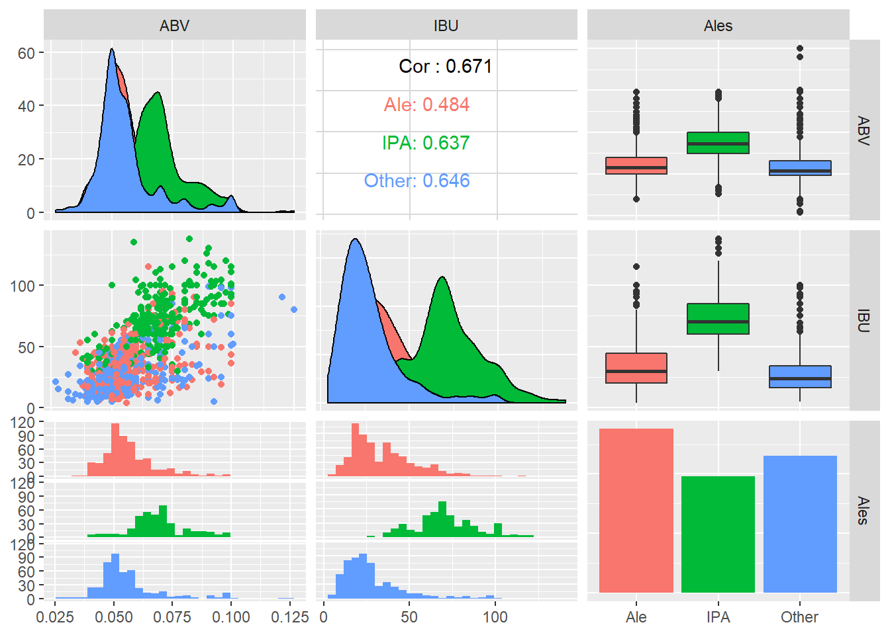
#Adding output from Pearson's product moment correlation test
cor.test(dfRM$ABV, dfRM$IBU, method=c("pearson", "kendall", "spearman"))##
## Pearson's product-moment correlation
##
## data: dfRM$ABV and dfRM$IBU
## t = 33.863, df = 1403, p-value < 2.2e-16
## alternative hypothesis: true correlation is not equal to 0
## 95 percent confidence interval:
## 0.6407982 0.6984238
## sample estimates:
## cor
## 0.6706215Question of Interest: Is there a difference with respect to IBU and ABV between IPAs (India Pale Ales) and other types of Ale (any beer with “Ale” in its name other than IPA)?
Answer:
We would like to investigate the difference with respect to IBU and ABV between IPAs and other types of Ale. To do this, we will construct both a KNN (k- Nearest Neighbor) model and NBB (Nieve-Bayes)we construct a dataframe to include only the ABV, IBU and Ales indicator, excluding missing values, to build a training and test set for further analysis.
library(dplyr)
set.seed(6)
splitPerc = .75
dfAles = dfRM %>% filter(Ales == "Ale" | Ales == "IPA")
dfAles = dfAles %>% select(ABV,IBU,Ales)
summary(dfAles)## ABV IBU Ales
## Min. :0.03500 Min. : 4.00 Ale :552
## 1st Qu.:0.05200 1st Qu.: 27.00 IPA :392
## Median :0.06000 Median : 45.00 Other: 0
## Mean :0.06178 Mean : 49.95
## 3rd Qu.:0.07000 3rd Qu.: 70.00
## Max. :0.09900 Max. :138.00dfAles = droplevels(dfAles,exclude = "Other")
summary(dfAles)## ABV IBU Ales
## Min. :0.03500 Min. : 4.00 Ale:552
## 1st Qu.:0.05200 1st Qu.: 27.00 IPA:392
## Median :0.06000 Median : 45.00
## Mean :0.06178 Mean : 49.95
## 3rd Qu.:0.07000 3rd Qu.: 70.00
## Max. :0.09900 Max. :138.00trainIndices = sample(1:dim(dfAles)[1],round(splitPerc * dim(dfAles)[1]))
train = dfAles[trainIndices,]
test = dfAles[-trainIndices,]
colnames(dfAles)[colSums(is.na(dfAles))>0]## character(0)Next, we want to iterate through multiple classification attempts where we test with k=1 to 30 to determine the optimal k value. The result is that the optimal k value is 5 as can be seen in the resulting chart.
library(class)
library(caret)## Loading required package: latticelibrary(e1071)
iterations = 500
numks = 30
masterAcc = matrix(nrow = iterations, ncol = numks)
for(j in 1:iterations)
{
accs = data.frame(accuracy = numeric(30), k = numeric(30))
trainIndices = sample(1:dim(dfAles)[1],round(splitPerc * dim(dfAles)[1]))
train = dfAles[trainIndices,]
test = dfAles[-trainIndices,]
for(i in 1:numks)
{
classifications = knn(train[,c("ABV", "IBU")],test[,c("ABV", "IBU")],train$Ales, prob = TRUE, k = i)
table(classifications,test$Ales)
CM = confusionMatrix(table(classifications,test$Ales))
masterAcc[j,i] = CM$overall[1]
}
}
MeanAcc = colMeans(masterAcc)
plot(seq(1,numks,1),MeanAcc, type = "l")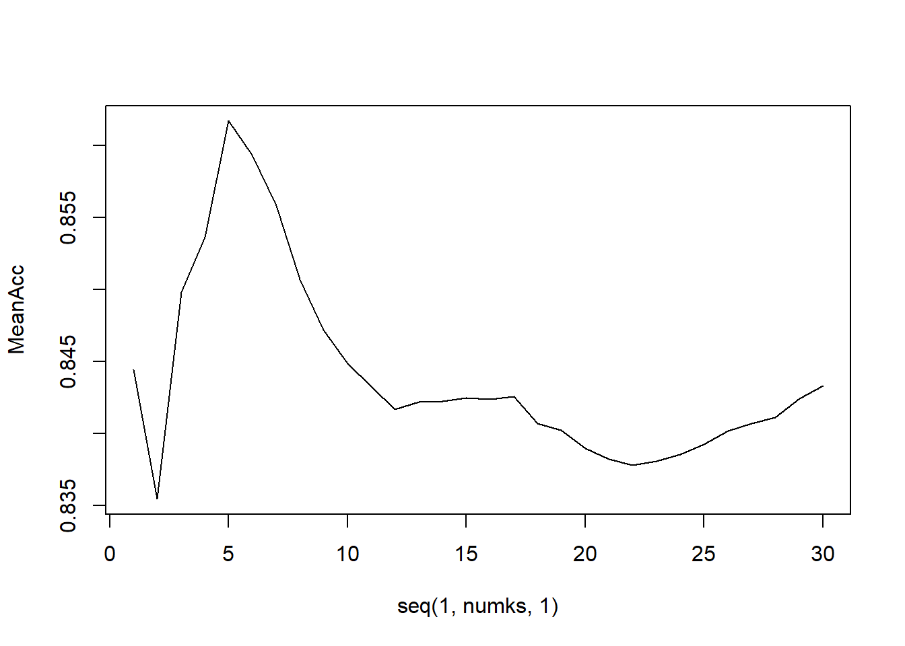
Now that we know the optimum k value is 5, we run the KNN with k=5.
We can see below that we can classify Ales and IPA’s by their ABV and IBU values with an accuracy of 87%. We also created a NBB model using the same dataset
trainIndices = sample(1:dim(dfAles)[1],round(splitPerc * dim(dfAles)[1]))
train = dfAles[trainIndices,]
test = dfAles[-trainIndices,]
# k = 5
classifications = knn(train[,c("ABV", "IBU")],test[,c("ABV", "IBU")],train$Ales, prob = TRUE, k = 5)
table(test$Ales,classifications)## classifications
## Ale IPA
## Ale 120 13
## IPA 17 86confusionMatrix(table(test$Ales,classifications))## Confusion Matrix and Statistics
##
## classifications
## Ale IPA
## Ale 120 13
## IPA 17 86
##
## Accuracy : 0.8729
## 95% CI : (0.8235, 0.9126)
## No Information Rate : 0.5805
## P-Value [Acc > NIR] : <2e-16
##
## Kappa : 0.7405
##
## Mcnemar's Test P-Value : 0.5839
##
## Sensitivity : 0.8759
## Specificity : 0.8687
## Pos Pred Value : 0.9023
## Neg Pred Value : 0.8350
## Prevalence : 0.5805
## Detection Rate : 0.5085
## Detection Prevalence : 0.5636
## Balanced Accuracy : 0.8723
##
## 'Positive' Class : Ale
## ### NB model
model_2 = naiveBayes(train[,c("ABV", "IBU")],train$Ales)
table_cm = table(predict(model_2, test[,c("ABV", "IBU")]), test$Ales)
CM = confusionMatrix(table_cm)
CM## Confusion Matrix and Statistics
##
##
## Ale IPA
## Ale 117 17
## IPA 16 86
##
## Accuracy : 0.8602
## 95% CI : (0.8093, 0.9018)
## No Information Rate : 0.5636
## P-Value [Acc > NIR] : <2e-16
##
## Kappa : 0.7154
##
## Mcnemar's Test P-Value : 1
##
## Sensitivity : 0.8797
## Specificity : 0.8350
## Pos Pred Value : 0.8731
## Neg Pred Value : 0.8431
## Prevalence : 0.5636
## Detection Rate : 0.4958
## Detection Prevalence : 0.5678
## Balanced Accuracy : 0.8573
##
## 'Positive' Class : Ale
## Additional Insights:
Quetion of Interest: Is there a difference in the size of beer and region the beer came from and do they effect ABV or IBU?
Answer:
We decided to run a two-way ANOVA on the size of the beer and the region that the beer came from to determine if these two variables have an effect on ABV or IBU. The regions were defined as “Northeast”, “Midwest”, “South” and “West”, from the census regions of the United States. Not enough beers came from Hawaii or Alaska, so the Pacific region was excluded. The size of the beer was limited to “12oz” and “16oz” since other sizes also did not have enough beers. Plots were run, and visually it looks like both size of the beer and region do have an effect on both ABV and IBU, but there doesn’t look like there is an interaction term. Running our two-way ANOVA showed no interaction term for IBU nor ABV, but both region and size of the beer has an effect on both ABV and IBU. This means that the effects of the size of the beer and region have on ABV and IBU are independent, thus we can look at the differences in ABV and IBU in each region. Both ABV and IBU are statistically larger in 16oz beers than 12oz beers. The only statistically significant difference in region IBU is the 6.8 IBU average difference between the West and Midwest regions. The only statistically significant difference in region ABV is the 0.22% average ABV difference between the Midwest and Northeast regions.
## Question 9: Data parsing + Box plots
dfFull$Ounces = as.factor(dfFull$Ounces)
dfFull$State = as.character(dfFull$State)
# Cut state into 4 regions
dfFull$Region = Recode(dfFull$State, "c('CT', 'ME', 'MA', 'NH', 'RI', 'VT', 'NJ', 'NY', 'PA') ='Northeast'; c('OH','IN','IL','MI','WI','MN','IA','MO','KS','NE','SD','ND') = 'MidWest'; c('TX','OK','AR','LA','MS','AL','TN','KY','WV','MD','DC','DE','VA','NC','SC', 'GA','FL') = 'South'; c('HI','AK') = 'Pacific'; c('NM','CO','WY','MT','ID','UT','AZ','NV','CA','OR','WA') = 'West'")
dfFull$Region = as.factor(dfFull$Region)
# Use only 12 and 16 ounce beers
dfFull = dfFull[dfFull$Ounces == 12 | dfFull$Ounces == 16,]
dfFull = dfFull[dfFull$Region != 'Pacific',]
# my summary for use with boxplots
mysummary<-function(x){
result<-c(length(x),mean(x),sd(x),sd(x)/sqrt(length(x)), min(x), max(x), IQR(x))
names(result)<-c("N","Mean","SD","SE", "Min", "Max", "IQR")
return(result)
}
# Create boxplots for both ABV and IBU
dfABV = dfFull %>% filter(!is.na(ABV))
ggboxplot(dfABV, x="Region", y="ABV", color="Ounces", pallette = c("#00AFBB", "#E7B800"))+
ggtitle("ABV of 12oz and 16oz Cans For Each Region")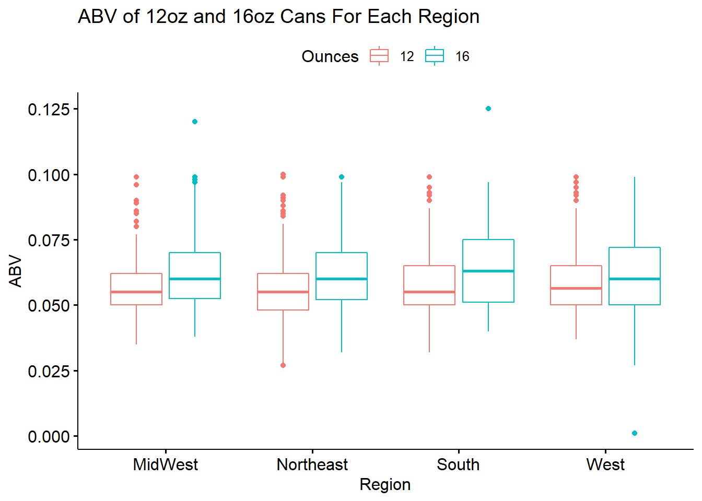
dfIBU = dfFull %>% filter(!is.na(IBU))
ggboxplot(dfIBU, x="Region", y="IBU", color="Ounces", pallette = c("#00AFBB", "#E7B800"))+
ggtitle("IBU of 12oz and 16oz Cans For Each Region")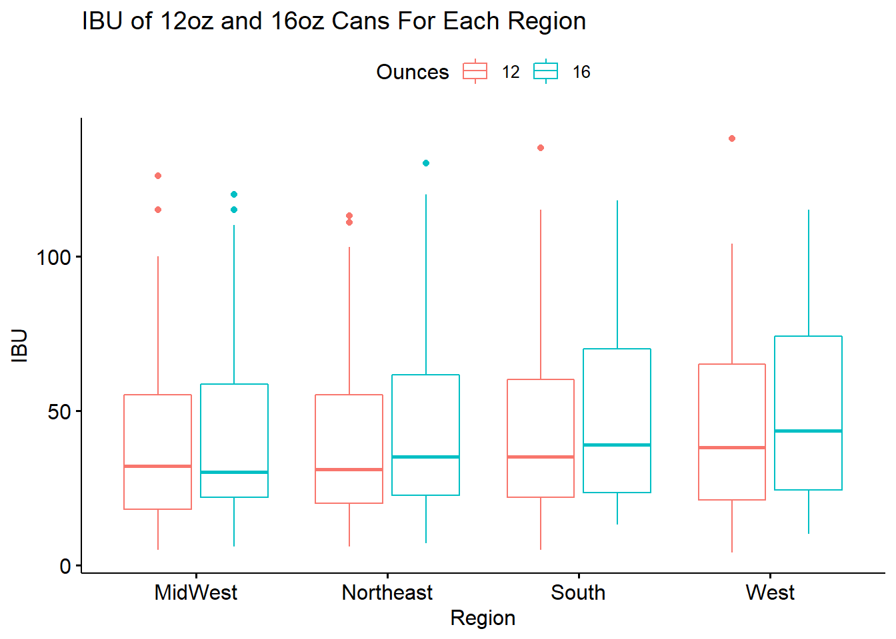
# Create line graphs with standard deviation bars
ABVsumstats<-aggregate(ABV~Region*Ounces,data=dfABV,mysummary)
ABVsumstats<-cbind(ABVsumstats[,1:2],ABVsumstats[,-(1:2)])
ggplot(ABVsumstats,aes(x=Region,y=Mean,group=Ounces,colour=Ounces))+
ylab("ABV")+
geom_line()+
geom_point()+
ggtitle("ABV of 12oz and 16oz Cans For Each Region")+
geom_errorbar(aes(ymin=Mean-SD,ymax=Mean+SD),width=.1)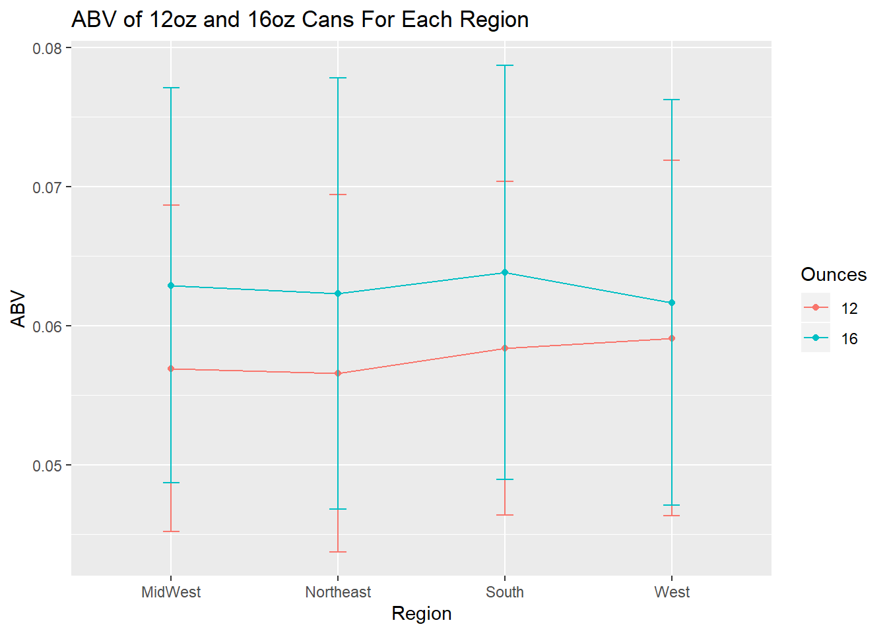
# Line graph with IBU
IBUsumstats<-aggregate(IBU~Region*Ounces,data=dfIBU,mysummary)
IBUsumstats<-cbind(IBUsumstats[,1:2],IBUsumstats[,-(1:2)])
ggplot(IBUsumstats,aes(x=Region,y=Mean,group=Ounces,colour=Ounces))+
ylab("IBU")+
geom_line()+
geom_point()+
ggtitle("IBU of 12oz and 16oz Cans For Each Region")+
geom_errorbar(aes(ymin=Mean-SD,ymax=Mean+SD),width=.1)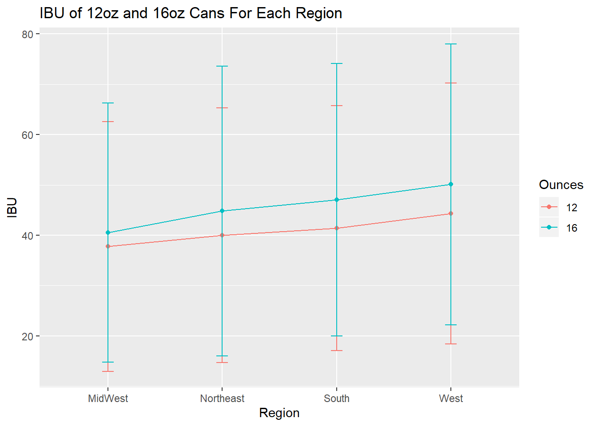
# Run two-way ANOVA
res.aov <- aov(dfIBU$IBU ~ dfIBU$Region + dfIBU$Ounces + dfIBU$Region:dfIBU$Ounces)
summary(res.aov)## Df Sum Sq Mean Sq F value Pr(>F)
## dfIBU$Region 3 10248 3416 5.108 0.00162 **
## dfIBU$Ounces 1 6241 6241 9.332 0.00230 **
## dfIBU$Region:dfIBU$Ounces 3 504 168 0.251 0.86054
## Residuals 1344 898819 669
## ---
## Signif. codes: 0 '***' 0.001 '**' 0.01 '*' 0.05 '.' 0.1 ' ' 1#IBU comparisons
TukeyHSD(res.aov)## Tukey multiple comparisons of means
## 95% family-wise confidence level
##
## Fit: aov(formula = dfIBU$IBU ~ dfIBU$Region + dfIBU$Ounces + dfIBU$Region:dfIBU$Ounces)
##
## $`dfIBU$Region`
## diff lwr upr p adj
## Northeast-MidWest 2.189423 -3.6178264 7.996672 0.7666943
## South-MidWest 3.372305 -1.8936125 8.638222 0.3524380
## West-MidWest 6.777855 2.2158294 11.339881 0.0007983
## South-Northeast 1.182882 -4.9490317 7.314795 0.9599376
## West-Northeast 4.588433 -0.9507517 10.127617 0.1438849
## West-South 3.405551 -1.5631816 8.374283 0.2917708
##
## $`dfIBU$Ounces`
## diff lwr upr p adj
## 16-12 4.338582 1.452593 7.224571 0.0032419
##
## $`dfIBU$Region:dfIBU$Ounces`
## diff lwr upr p adj
## Northeast:12-MidWest:12 2.2466132 -6.7318191 11.225045 0.9950075
## South:12-MidWest:12 3.6523650 -4.4206699 11.725400 0.8693574
## West:12-MidWest:12 6.5642336 -0.8258389 13.954306 0.1244475
## MidWest:16-MidWest:12 2.7787366 -5.4135772 10.971050 0.9699606
## Northeast:16-MidWest:12 7.0621016 -4.6128908 18.737094 0.5952680
## South:16-MidWest:12 9.2879081 -2.3870843 20.962900 0.2347489
## West:16-MidWest:12 12.3461876 3.5150082 21.177367 0.0006179
## South:12-Northeast:12 1.4057518 -7.0782815 9.889785 0.9996489
## West:12-Northeast:12 4.3176204 -3.5193498 12.154591 0.7052216
## MidWest:16-Northeast:12 0.5321235 -8.0654887 9.129736 0.9999996
## Northeast:16-Northeast:12 4.8154884 -7.1473865 16.778363 0.9255115
## South:16-Northeast:12 7.0412949 -4.9215800 19.004170 0.6292341
## West:16-Northeast:12 10.0995745 0.8911728 19.307976 0.0201093
## West:12-South:12 2.9118686 -3.8689682 9.692705 0.8976759
## MidWest:16-South:12 -0.8736284 -8.5208881 6.773631 0.9999714
## Northeast:16-South:12 3.4097366 -7.8894679 14.708941 0.9845751
## South:16-South:12 5.6355431 -5.6636614 16.934748 0.8000173
## West:16-South:12 8.6938226 0.3657793 17.021866 0.0335186
## MidWest:16-West:12 -3.7854970 -10.7079143 3.136920 0.7131523
## Northeast:16-West:12 0.4978680 -10.3239296 11.319666 0.9999999
## South:16-West:12 2.7236745 -8.0981231 13.545472 0.9948246
## West:16-West:12 5.7819540 -1.8858740 13.449782 0.3002933
## Northeast:16-MidWest:16 4.2833650 -7.1013676 15.668098 0.9473743
## South:16-MidWest:16 6.5091714 -4.8755612 17.893904 0.6637771
## West:16-MidWest:16 9.5674510 1.1237302 18.011172 0.0139018
## South:16-Northeast:16 2.2258065 -11.8739658 16.325579 0.9997456
## West:16-Northeast:16 5.2840860 -6.5686715 17.136844 0.8779194
## West:16-South:16 3.0582796 -8.7944780 14.911037 0.9939680# ABV two-way ANOVA
res.aov2 <- aov(dfABV$ABV ~ dfABV$Region + dfABV$Ounces + dfABV$Region:dfABV$Ounces)
summary(res.aov2)## Df Sum Sq Mean Sq F value Pr(>F)
## dfABV$Region 3 0.0013 0.000436 2.497 0.0581 .
## dfABV$Ounces 1 0.0102 0.010172 58.259 3.37e-14 ***
## dfABV$Region:dfABV$Ounces 3 0.0012 0.000392 2.244 0.0812 .
## Residuals 2249 0.3927 0.000175
## ---
## Signif. codes: 0 '***' 0.001 '**' 0.01 '*' 0.05 '.' 0.1 ' ' 1#ABV Comparisons
TukeyHSD(res.aov2)## Tukey multiple comparisons of means
## 95% family-wise confidence level
##
## Fit: aov(formula = dfABV$ABV ~ dfABV$Region + dfABV$Ounces + dfABV$Region:dfABV$Ounces)
##
## $`dfABV$Region`
## diff lwr upr p adj
## Northeast-MidWest -0.0022313511 -0.0044219435 -4.075864e-05 0.0439941
## South-MidWest -0.0008677869 -0.0029701982 1.234624e-03 0.7132219
## West-MidWest -0.0003533624 -0.0021367495 1.430025e-03 0.9568696
## South-Northeast 0.0013635641 -0.0010467200 3.773848e-03 0.4654744
## West-Northeast 0.0018779887 -0.0002597218 4.015699e-03 0.1081968
## West-South 0.0005144246 -0.0015328282 2.561677e-03 0.9169622
##
## $`dfABV$Ounces`
## diff lwr upr p adj
## 16-12 0.004219831 0.003085776 0.005353885 0
##
## $`dfABV$Region:dfABV$Ounces`
## diff lwr upr p adj
## Northeast:12-MidWest:12 -0.0003454599 -3.705236e-03 0.003014316 0.9999862
## South:12-MidWest:12 0.0014538387 -1.732193e-03 0.004639870 0.8646078
## West:12-MidWest:12 0.0021797918 -7.412543e-04 0.005100838 0.3142254
## MidWest:16-MidWest:12 0.0059625584 2.854263e-03 0.009070854 0.0000002
## Northeast:16-MidWest:12 0.0053737990 6.799414e-04 0.010067657 0.0122578
## South:16-MidWest:12 0.0069040982 1.897827e-03 0.011910370 0.0007803
## West:16-MidWest:12 0.0047259927 1.306300e-03 0.008145685 0.0007515
## South:12-Northeast:12 0.0017992986 -1.442192e-03 0.005040789 0.6977894
## West:12-Northeast:12 0.0025252517 -4.561870e-04 0.005506690 0.1676488
## MidWest:16-Northeast:12 0.0063080183 3.142901e-03 0.009473136 0.0000000
## Northeast:16-Northeast:12 0.0057192589 9.875821e-04 0.010450936 0.0061223
## South:16-Northeast:12 0.0072495581 2.207810e-03 0.012291306 0.0003583
## West:16-Northeast:12 0.0050714526 1.600032e-03 0.008542874 0.0002619
## West:12-South:12 0.0007259531 -2.058231e-03 0.003510137 0.9936040
## MidWest:16-South:12 0.0045087197 1.528674e-03 0.007488765 0.0001265
## Northeast:16-South:12 0.0039199603 -6.899712e-04 0.008529892 0.1638077
## South:16-South:12 0.0054502595 5.225903e-04 0.010377929 0.0182879
## West:16-South:12 0.0032721540 -3.139981e-05 0.006575708 0.0543635
## MidWest:16-West:12 0.0037827666 1.087885e-03 0.006477648 0.0005658
## Northeast:16-West:12 0.0031940072 -1.236928e-03 0.007624942 0.3600238
## South:16-West:12 0.0047243065 -3.632772e-05 0.009484941 0.0534787
## West:16-West:12 0.0025462010 -5.025991e-04 0.005595001 0.1817970
## Northeast:16-MidWest:16 -0.0005887594 -5.145312e-03 0.003967794 0.9999343
## South:16-MidWest:16 0.0009415398 -3.936229e-03 0.005819309 0.9990479
## West:16-MidWest:16 -0.0012365657 -4.465215e-03 0.001992083 0.9424912
## South:16-Northeast:16 0.0015302992 -4.483304e-03 0.007543903 0.9944921
## West:16-Northeast:16 -0.0006478063 -5.422214e-03 0.004126602 0.9999085
## West:16-South:16 -0.0021781055 -7.259978e-03 0.002903767 0.8989944